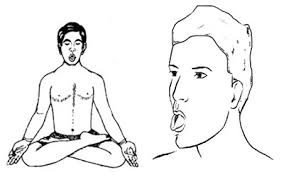

प्राणायाम > शीतली प्राणायाम :

-
शीतली प्राणायाम, जिसे "कोलिंग ब्रीथ" भी कहा जाता है, शरीर को ठंडा करने और मानसिक शांति प्राप्त
करने के लिए एक प्रभावशाली प्राणायाम तकनीक है।
शीतली प्राणायाम करने की विधि :
- आरंभिक स्थिति: सुखासन या पद्मासन में बैठें और रीढ़ को सीधा रखें।
- जीभ की स्थिति: जीभ को बाहर की ओर निकालें और उसे लपेटें ताकि एक ट्यूब बन सके।
- सांस लेना: इस ट्यूब के माध्यम से धीरे-धीरे सांस लें और शीतलता का अनुभव करें।
- सांस छोड़ना: जीभ को मुंह के अंदर लाएं और नाक से धीरे-धीरे सांस छोड़ें।
- ध्यान केंद्रित करना: इस प्रक्रिया को 5-10 मिनट तक दोहराएं और ध्यान केंद्रित करें।
लाभ :
- शीतली प्राणायाम शरीर को ठंडा करता है और तनाव को कम करता है।
- यह मानसिक शांति और शारीरिक संतुलन को बढ़ाता है।
Move to top